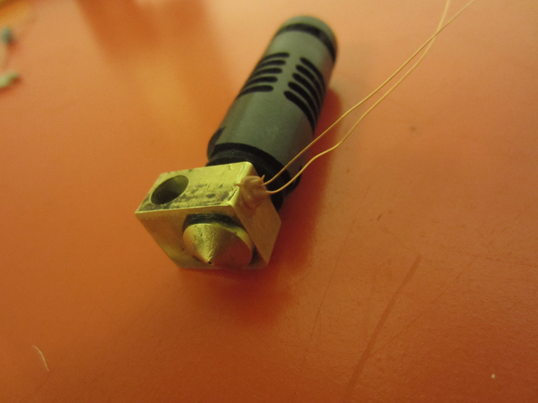
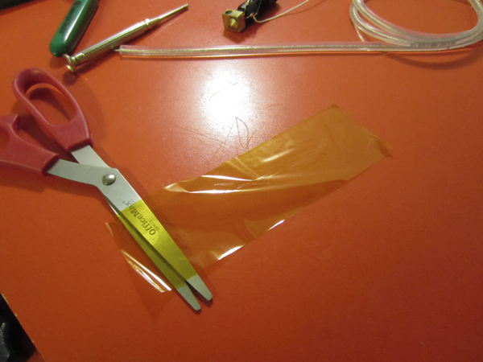
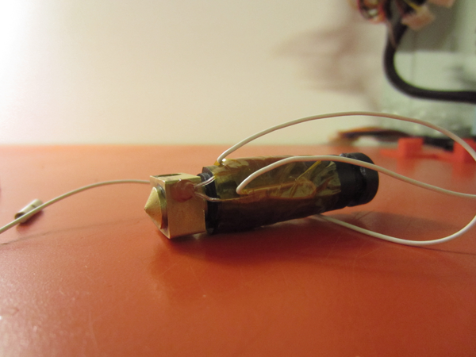
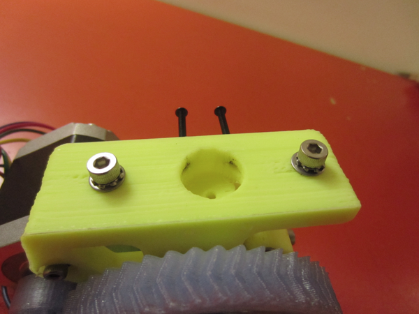

Introduction
This is a build-log we took notes from while assembling J-Head MKV-B hotend. This is only intended to provide a description of how we build our j-head hotend. This is not intended as a reference or guide. We've built and refurbished many j-heads and we publish this document to help customers see how we do it. You don't have to follow the steps we followed in this document.
Terms and Conditions
The Terawatt Industries J-Head Assembly Reference is intended to describe how we build our j-head hotends. It is not intended as a reference or guide. If you convey or share this document to/with others you must include these Terms and Conditions, whether in electronic or printed form.
3D Printers are a fire hazard, a pinch hazard, a shock hazard, and a burn hazard. Keep all flammable items and body parts away from the hotend while operating a 3D printer. Do not leave a 3D Printer unattended while operating.
The hotend is the thermoplastic device which melts plastic and is mounted onto the extruder. The hotend can operate at temperatures near or above 480F (250C). It is a fire hazard and can cause severe burns and scars. In many RepRap 3D Printer designs the hotend is exposed (e.g. it has no cover) and flammable materials can fall onto the hotend to cause a fire.
The temperature of the J-Head hotend is measured by a thermistor which provides information for software-based temperature regulation. If the thermistor is disloged from the hotend then the firmware's temperature regulation will fail and the hotend will overheat.
If the hotend overheats its PEEK insulation can melt. This will destroy the component and can present immediate and significant risk of fire.
By proceeding to refer to this document you agree to indemnify Terawatt Industries, legally and wholly, for any failure of your hotend. You agree to indemnify Terawatt Industries, legally and wholly, for any damage caused by accident or misuse of your j-head hotend and/or 3D Printer; not limited to you, your family, friends, estate, possessions, or their possessions; whether caused by proper or improper assembly, usage of the extruder, j-head hotend, the 3D printer that utilizes such parts, and any equipment connected internally and externally to the 3D printer.
If you are building or repairing your J-Head MKV-B hotend by following some or all of the steps in this document, then you agree that it's your reponsibility to assemble the part, inspect it regularly and often, and prevent it from failing or causing an accident, fire, or injury. You agree that it is your responsibility, not the responsibility of Terawatt Industries, to prevent the thermistor from becoming disloged from the MKV-B hotend while printing.
If you do not agree to these terms and conditions, then do not proceed to use this document.
MKV-B J-Head
Assembly Reference
We're completed the J-Head assembly in one 'session' and attached it to the extruder and machine in another.
Thermistor Wiring
- NOTE: the Terawatt Industries MKV-B kit comes with 4pcs. 1/8" I.D. teflon tubing and 4pcs. metal wire crimps but we don't use those parts here for the thermistor, so only 2pcs. are needed of each.
- We located the J-head with sealed thermistor. The thermistor is sealed with a high-temperature silicone sealant.
- We trimmed both thermistor wires to a little over 1/2".
- We cut two pieces of 30AWG teflon insulation, approx. 1/2" length. Then we used them to carefully insulate both thermistor leads (wires). This requires the patience of threading a thin needle.
- We inserted the 30AWG teflon insulation up to the base of the thermistor, touching the silicone seal. This helps to prevent a short circuit.
- We located a piece of 750mm 22AWG stranded copper wire to attach to the thermistor lead. We had already stripped the ends of these wires.
- We wrapped the 22AWG stranded wire around the thermistor lead.
- We find that a wire-wrap tool is optional but superior for connecting thermistor leads to other wires. We strongly recommend getting one if you ever plan to work on electronics projects.
- We repeated the above steps for the second thermistor wire.
- Finally we verified that the teflon insulation is still attached up to the base of the thermistor, touching the seal. If the thermistor wires touch it causes a short circuit on the thermistor which the software interperets as having reached maximum-temperature ("maxtemp"). Nothing breaks permanently but the nozzle won't heat when this happens.
Secure Thermistor Wiring
- We routed the thermistor wires on either side of the corner of the j-head nozzle. This establishes wire separation and reduce the chance of a short-circuit.
- We cut a piece of 50mm (2") kapton tape 150mm-200mm (6-8") length. We cut the tape in half lengthwise so it's 25mm (1") wide.
- We took a 1" strip of kapton tape you just cut and start wrapping it around the (black/tan) PEEK barrell of the j-head hotend. We started near one corner of the nozzle where the thermistor wires are routed.
- We finished wrapping the kapton tape around both thermistor wires to secure them to the PEEK barrell. We wrapped the tape as close to the brass nozzle as possible.
- Now, provide strain relief:
- We routed the 22AWG wires sticking out from the kapton tape near the top of the j-head, back towards the brass nozzle.
- We wrapped another layer of 25mm x 150-200mm kapton tape over the thermistor wires in the same position as the first layer. Leave the wires sticking out of the tape towards the bottom.
- We routed the 22AWG wires sticking out from the kapton tape near the bottom of the j-head, back up towards the top of the hotend.
- We wrapped another layer of kapton tape over at the same position as the previous layers.
- We wrapped another 2 layers of kapton tape around the thermistor wires.
Heater-resistor wiring
- We located the heater-resistor and trim the leads to slightly about 15mm (~1/2"). NOTE: we found the leads in these photos to be ~5mm longer than desired.
- We located the 12mm (1/2") PTFE tubing and non-insulated butt-splice connectors. In most cases the 18-24 AWG metal splices will fit inside the PTFE tubing but this may take a little elbow grease. In situations where we haven't been able to fit the splice inside the PTFE we've chosen to ditch the PTFE because kapton is attached later, i.e. the splice is more important.
- We insulated the heater-resistor leads with 18AWG teflon tubing. The tubing should be installed up to the base of the heater-resistor. Leave 7mm-10mm of the resistor lead exposed on the other side, for the splice connection.
- We attached and a butt-splice with (or without) PTFE insulation to one (1) side of the resistor. We crimped one side of the splice (so we can attach the 18AWG wire into the other side) onto the resistor wire. It took some force to crimp the splice, especially with PTFE around it. A crimp tool like ours generates cracking noises and a pop when the PTFE+splice is crimped around the wire.
- We inserted 18AWG stranded copper wire, 750mm+ length, into the other side of the butt-splice we and finished crimping.
- We were careful not to crimp both sides of the heater-resistor yet!
- We pulled on the wires we just crimped with a couple/few pounds of force using our hands. We did this to verify the crimps and wiring didn't fall off, come apart, or become disconnected.
- We inserted the heater resistor through the resistor hole in the J-head.
- We crimped another PTFE+splice to the resistor wire we just threaded through the j-head.
- We attached and crimped the other side of the heater-resistor to 18 AWG stranded copper wire, 750mm+ length, using a second butt-splice w/PTFE insulation.
Secure Resistor Wiring
- First we routed the resistor wires. In this assembly we tried a few different ways of bending the resistor wires.
- We settled on a bend that keeps the PTFE tubing maximized distance from the groove at the top of the j-head. If the PTFE goes above the groove then attachment to the extruder is often problematic.
- With the proper routing established, we applied more kapton tape as we did with the thermistor.
- 4-6 layers of kapton tape around the resistor wires seems to work OK for us.
Attach J-Head to Greg's Extruder
We've been using M2.5x25mm socket-cap screws to attach the extruder. There are other ways to do this but be careful to watch for clearance of the extruder gears.
- We de-burred the j-head mounting hole on the bottom of the extruder. Sometimes we'll find extra pieces of plastic in the j-head mounting hole which prevents the j-head from mounting flush.
- We de-burred the 2x M2.5 holes on the bottom of Greg's extruder used to mount the j-head.
- We inserted 2x M2.5 screws into the holes in the bottom of Greg's extruder. We partially threaded them, not so far that they were visible from the bottom of the extruder.
- We inserted the j-head into the bottom of Greg's extruder.
- We observed the small opening in the extruder visible from the side/top. We use this to verify that the J-head is inserted completely.

- We tightened the M2.5 screws. We tightened them evenly, alternating 5-10 turns at a time. When we don't tighten them evenly mis-alignment of the screws or hotend can occur.

Hoorah!
Our hotend and extruder took about an hour to assemble and were ready to be attached to a printer and commissioned for use. Before we attached this to our machine we pulled on the wires a few more times with our hands using moderate force. We weren't trying to break anything, but trying to verify that moderate forces wouldn't dislodge the thermistor or any wiring. Since nothing came loose we knew it was ready to use. If we get this far along and find something in the hotend assembly is loose, sub-standard, or improper, we'll back up and re-build it. This is perhaps the most important component of a 3D printer. From our experience, quality assembly of the hotend pays dividends in improved performance and uptime for the printer.